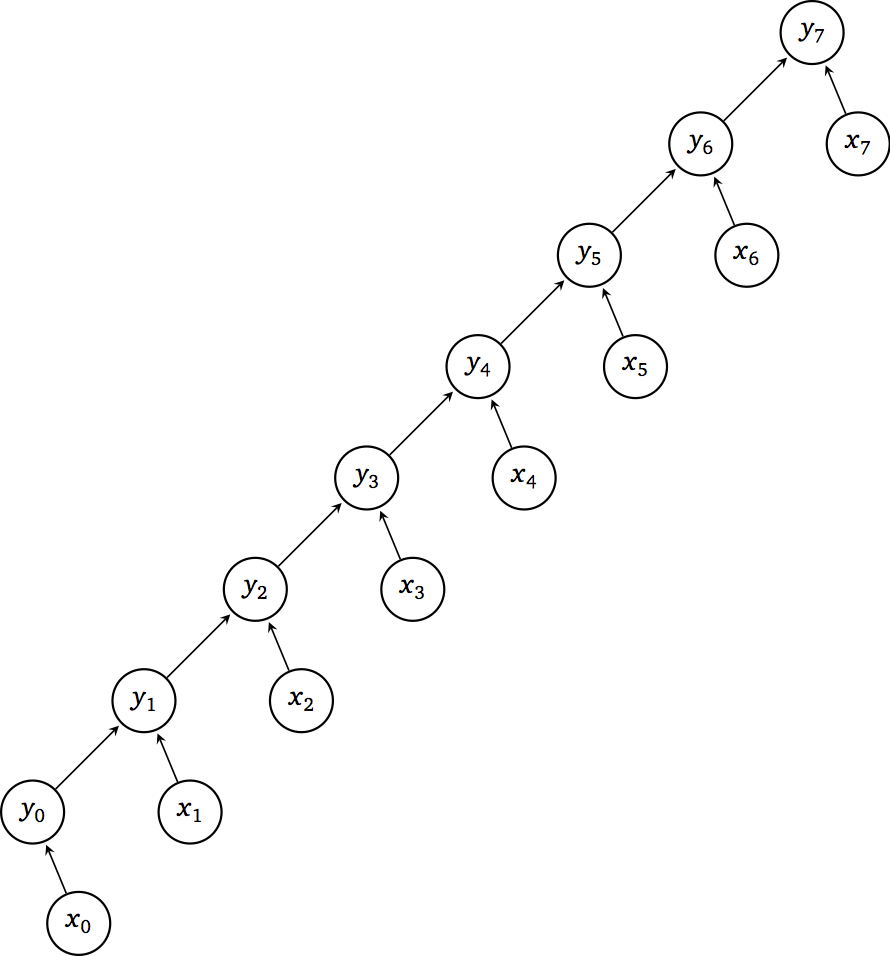
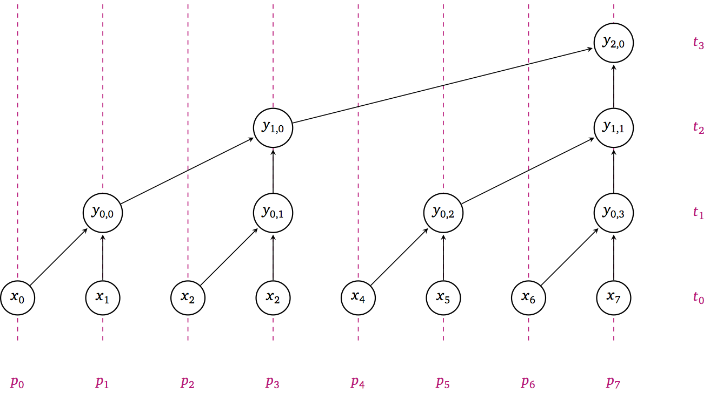
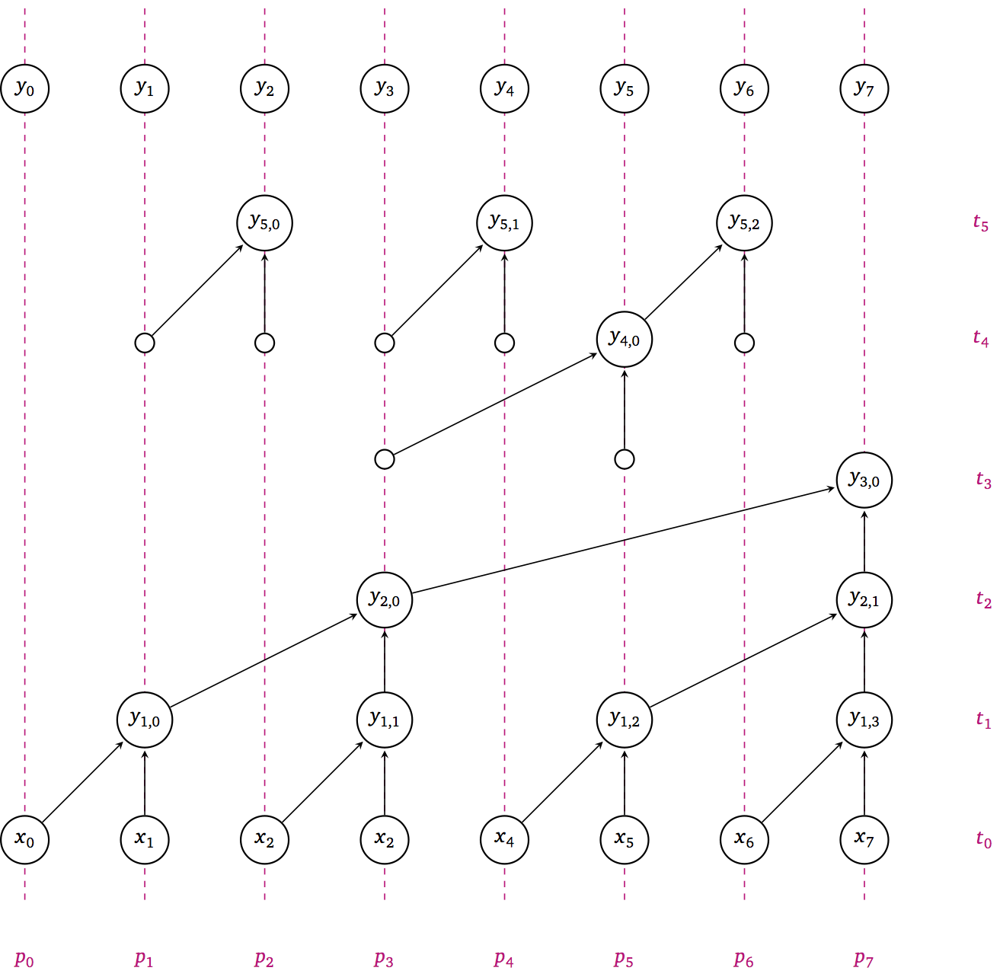

17) Parallel reductions and scans#
Last time:
Case Study 2: ClimaCore.jl
Today:
Reductions
Parallel scans
Graphs
1. Reductions#
Reduction operators are a type of operators commonly used in parallel programming to reduce the elements of an array into a single result. Reduction operators are associative and often (but not necessarily) commutative.
A C snippet for a reduction operation would look like:
double reduce(int n, double x[]) {
double y = 0;
for (int i=0; i<n; i++)
y += x[i];
return y;
}
Expressing essential data dependencies, traversing the entries of the array x iteratively, like in the for-loop above, results in the following directed acyclic graph (DAG):

The properties of this DAG are the following:
Work \(W(n) = n\)
Depth \(D(n) = n\)
Parallelism \(P(n) = \frac{W(n)}{D(n)} = 1\)
A 2-level method#
double reduce(int n, double x[]) {
int P = sqrt(n); // ways of parallelism
double y[P];
#pragma omp parallel for shared(y)
for (int p=0; p<P; p++) {
y[p] = 0;
for (int i=0; i<n/P; i++)
y[p] += x[p*(n/P) + i];
}
double sum = 0;
for (int p=0; p<P; p++)
sum += y[p];
return sum;
}
With the above 2-level approach, the DAG has the following properties:
Work \(W(n) = n + \sqrt{n}\)
Depth \(D(n) = 2 \sqrt{n}\)
Parallelism \(P(n) = \sqrt{n}\)
PRAM performance model#
A parallel random-access machine (PRAM) is used to model time complexity of parallel algorithms (without taking into account practicalities such as latency and synchronization). In this model we have:
Processing units (e.g., OpenMP threads) execute local programs
Communication through shared memory with no access cost
Synchronous operation on a common clock
Barrier-like constructs are free
Multiple Instruction, Multiple Data (MIMD)
Scheduling#
How much time does it take to execute a DAG on \(p\) processors?
Sum work of each node \(i\) along critical path of length \(D(n)\)
\[ \sum_{i=1}^{D(n)} W_i \]Partition total work \(W(n)\) over \(p \le P(n)\) processors (as though there were no data dependencies)
\[ \left\lceil \frac{W(n)}{p} \right\rceil \]Total time must be at least as large as either of these
\[ T(n,p) \ge \max\left( D(n), \left\lceil \frac{W(n)}{p} \right\rceil \right) \]
More levels?#
double reduce(int n, double x[]) {
if (n == 1) return x[0];
double y[n/2];
#pragma omp parallel for shared(y)
for (int i=0; i<n/2; i++)
y[i] = x[2*i] + x[2*i+1];
return reduce(n/2, y);
}
The above snippets divides the array x in half and recursively applies the reduction on each of the two halves, resulting in the following DAG:

With the above bisection/recursive approach, the DAG has the following properties:
\(W(n) = n/2 + n/4 + n/8 + \dotsb = n\)
\(D(n) = \log_2 n\)
\(P(n) = n/\log_2 n\)
2. Parallel scans#
A “scan” in computer science is also called a prefix sum and is a sequence of numnbers obtained as the sum of another sequence of numbers. For example, the scan of the first \(n\) natural numbers are the triangular numbers. A C snippet to compute this scan looks like the following:
void scan(int n, double x[], double y[]) {
y[0] = x[0];
for (int i=1; i<n; i++)
y[i] = y[i-1] + x[i];
}
Questions:
What are the DAG properties of this algorithm?
How fast can we make it?

How can we optimize it?
void scan_inplace(int n, double y[], int stride) {
if (2*stride > n) return;
#pragma omp parallel for
for (int i=2*stride-1; i<n; i+=2*stride)
y[i] += [i - stride];
scan(n, y, 2*stride);
#pragma omp parallel for
for (int i=3*stride-1; i<n; i+=2*stride)
y[i] += y[i - stride];
}
// call like
scan_inplace(n, x, 1);
Application of scans: parallel select#
Select elements of array x[] that satisfy a given condition cond.
int c[n];
#pragma omp parallel for
for (int i=0; i<n; i++)
c[i] = cond(x[i]); // returns 1 or 0
scan_inplace(n, c, 1);
double results[c[n-1]]; // allocate array with total number of items
#pragma omp parallel for
for (int i=0; i<n; i++)
if (cond(x[i])) // Can use `c[i] - c[i-1]` to avoid recomputing
results[c[i]-1] = x[i];
3. Graphs#
An (undirected) graph \((V, E)\) is a set of vertices \(V\) and unordered pairs \((u,v) = (v,u) \in E\) of vertices \(u,v \in V\).
Graphs are often expressed by their adjacency matrix of dimension \(n\times n\) where \(n = |V|\),
using Graphs, GraphRecipes
using Plots
# Create a 3x3 grid graph
G = SimpleGraph(9)
for i in 1:3
for j in 1:3
node = (i-1)*3 + j
if i < 3
add_edge!(G, node, node+3)
end
if j < 3
add_edge!(G, node, node+1)
end
end
end
# Draw the graph with labels
graphplot(G)
A = adjacency_matrix(G)
9×9 SparseArrays.SparseMatrixCSC{Int64, Int64} with 24 stored entries:
⋅ 1 ⋅ 1 ⋅ ⋅ ⋅ ⋅ ⋅
1 ⋅ 1 ⋅ 1 ⋅ ⋅ ⋅ ⋅
⋅ 1 ⋅ ⋅ ⋅ 1 ⋅ ⋅ ⋅
1 ⋅ ⋅ ⋅ 1 ⋅ 1 ⋅ ⋅
⋅ 1 ⋅ 1 ⋅ 1 ⋅ 1 ⋅
⋅ ⋅ 1 ⋅ 1 ⋅ ⋅ ⋅ 1
⋅ ⋅ ⋅ 1 ⋅ ⋅ ⋅ 1 ⋅
⋅ ⋅ ⋅ ⋅ 1 ⋅ 1 ⋅ 1
⋅ ⋅ ⋅ ⋅ ⋅ 1 ⋅ 1 ⋅
Compressed representation#
Adjacency matrices often have many zeros so it’s common to store a compressed representation.
We’ll revisit such formats for sparse matrices.
In Julia, this representation is Compressed Sparse Column (CSC).
A.colptr
10-element Vector{Int64}:
1
3
6
8
11
15
18
20
23
25
A.rowval
24-element Vector{Int64}:
2
4
1
3
5
2
6
1
5
7
2
4
6
8
3
5
9
4
8
5
7
9
6
8
# Loop through the rows and print the indices
for row in 1:size(A, 1)
println(A.rowval[A.colptr[row]:A.colptr[row+1]-1])
end
[2, 4]
[1, 3, 5]
[2, 6]
[1, 5, 7]
[2, 4, 6, 8]
[3, 5, 9]
[4, 8]
[5, 7, 9]
[6, 8]
Maximal independent set (MIS)#
An independent set is a set of vertices \(S \subset V\) such that \((u,v) \notin E\) for any pair \(u,v \in S\).
independent_set(G, MaximalIndependentSet())
5-element Vector{Int64}:
7
1
3
5
9
Maximal independent sets are not unique.
Greedy Algorithms#
Start with all vertices in candidate set \(C = V\), empty \(S\)
While \(C \ne \emptyset\): Choose a vertex \(v \in C\)
Add \(v\) to \(S\)
Remove \(v\) and all neighbors of \(v\) from \(C\)
Algorithms differ in how they choose the next vertex \(v \in C\).